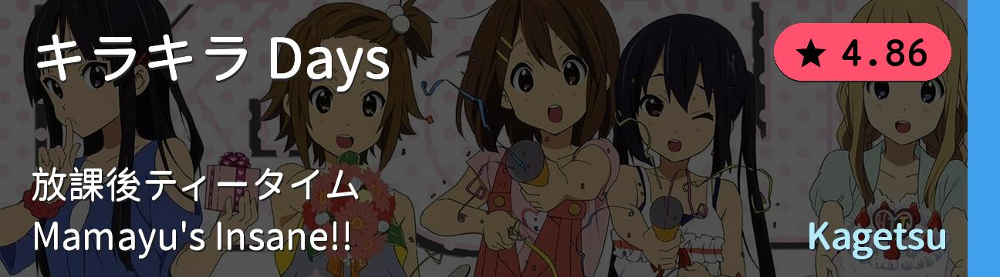
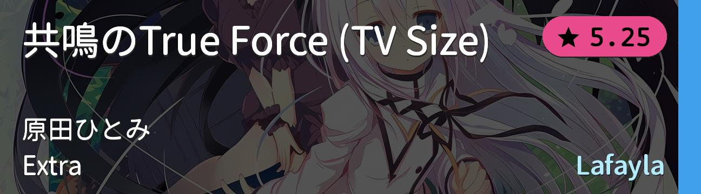
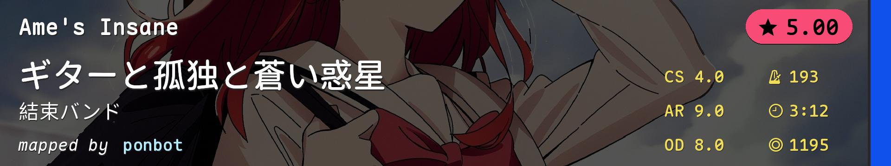
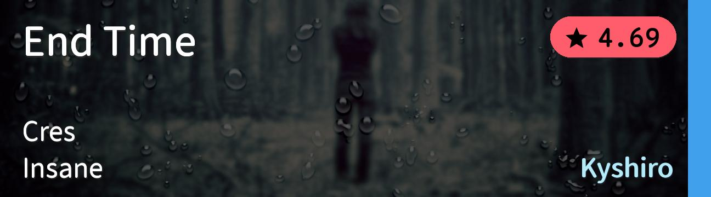
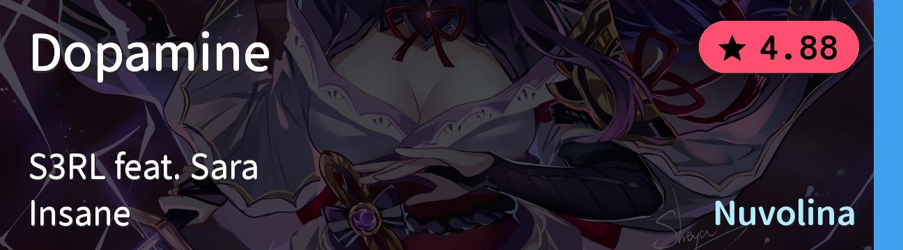
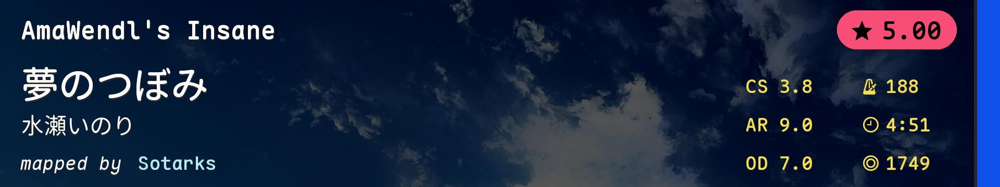
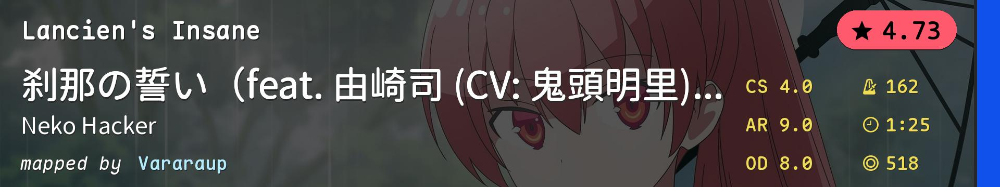
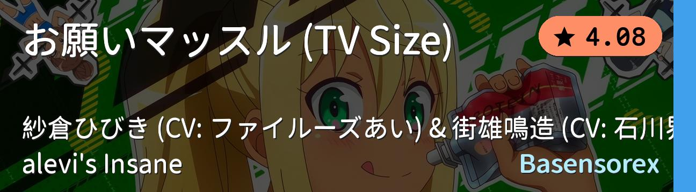
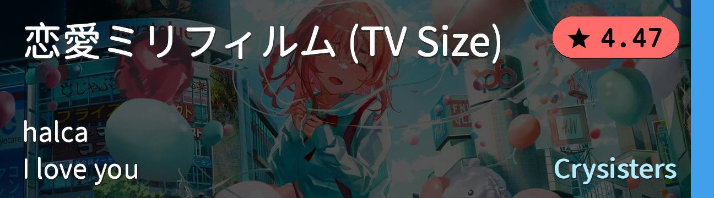

#
BID
Beatmap Info
Mods
Notes
1
962800

NM
pp跳
2
4574851

NM
跳+爆发
3
3902695

NM
跳切
4
432841

NM
连打
5
3684386

NM
跳切
6
3558530

NM
耐力pp跳
7
4088464

NM
非常规
8
3400066

NM
alt
9
4213971

NM
alt/tech
10
3983420
NM
稳定
![Electro.muster feat. Rita - Dream Walker (Amamya) [Collab Insane]](./萌新进阶1.covers/10-3983420.jpg)